السلسلة 2
الحافلة (صنف D) · 20 سؤال بالصوت. حاول تجاوب بوحدك، من بعد شوف الجواب.
السؤال 1
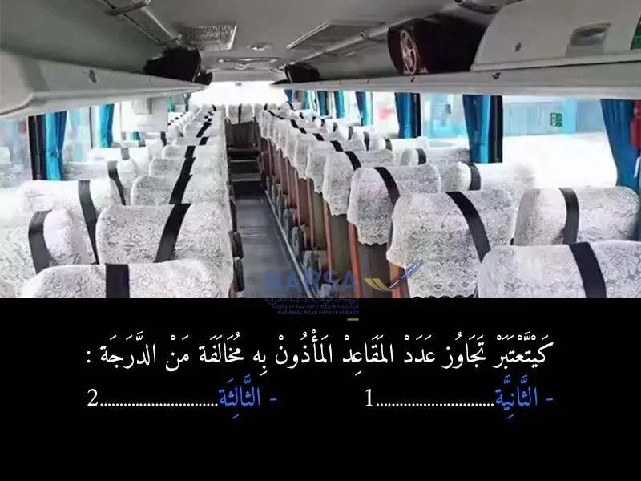
بيّن الجواب
الجواب الصحيح: 2
تجاوز عدد المقاعد المسموح بها يعني كتسمح لناس كثر من اللي القانون رخص ليهم يركبوا في الحافلة. هادشي كيخلي الحافلة تكون معرضة لمخاطر السلامة، حيث الوزن والتوازن كيكونو غير مناسبين، وهادشي ممكن يسبب حوادث.
لذلك، القانون كيعتبر هاد التصرف مخالفة من الدرجة الثالثة، يعني الغرامة ديالها من 300 حتال 600 درهم
السؤال 2
بيّن الجواب
الجواب الصحيح: 1
إذا قمت بنقل ركاب أكثر من العدد المسموح به حسب بطاقة التسجيل (الرمادية) أو رخصة السياقة، فإنك ترتكب مخالفة من الدرجة الأولى. هذه المخالفة تُعرضك لغرامة مالية تتراوح بين 700 و1,400 درهم، بالإضافة إلى سحب نقطة واحدة من رصيد رخصتك.
📌 ملاحظات مهمة
العدد المسموح به: يُحدد حسب عدد المقاعد وأحزمة الأمان المتوفرة في المركبة.
المركبات العمومية: إذا كانت وسيلة النقل عمومية، يمكن توقيف المركبة أو حتى حجزها.
الحوادث والتأمين: في حالة وقوع حادث، قد يؤدي نقل ركاب زائدين إلى رفض التأمين تعويض الأضرار.
لذا، من الضروري الالتزام بعدد الركاب المسموح به لضمان سلامتك وسلامة الآخرين، وتفادي المخالفات والعقوبات
السؤال 3
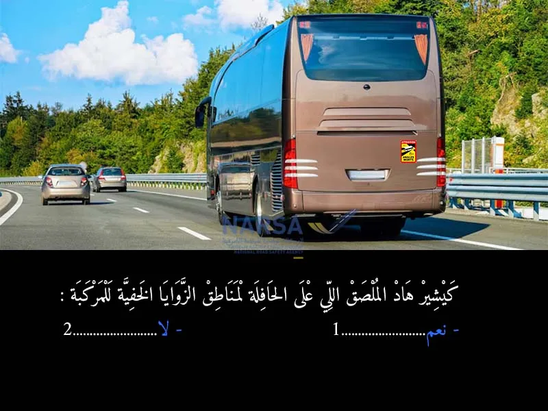
بيّن الجواب
الجواب الصحيح: 1
لملصق اللي كيشير للزوايا الخفية هو تحذير مهم جداً على الحافلة، وكيعني:
👁 هناك مناطق حول الحافلة لا يستطيع السائق رؤيتها مباشرة (الزوايا الخفية).
⚠ هاد المناطق ممكن تكون خطيرة لأنها تخفي سيارات، دراجات، أو راجلين.
🚫 من الواجب على السائقين والركاب الانتباه وعدم الوقوف أو المرور في هاد المناطق.
🛑 الملصق كيعطي تنبيه للناس من حول الحافلة باش يكونوا حذرين
السؤال 4
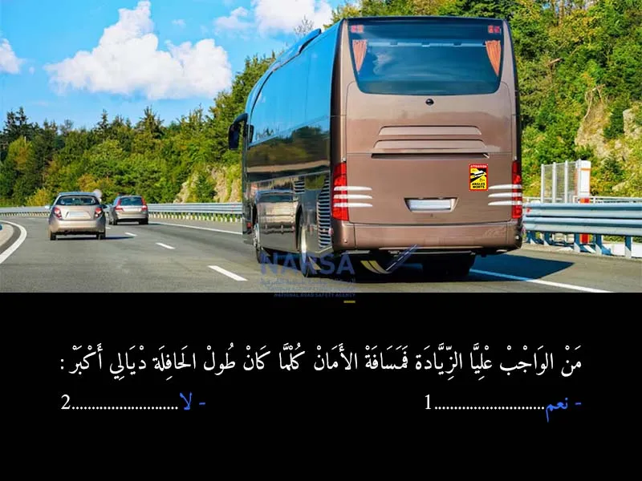
بيّن الجواب
الجواب الصحيح: 1
كلما زاد طول الحافلة ديالك، خاصك تزيد مسافة الأمان بينك وبين السيارة اللي قدامك، وهادشي لأنه:
🛑 الحافلات الطويلة كتحتاج مسافة توقف أكبر بسبب وزنها وحجمها.
⚠ زيادة مسافة الأمان كتنقص خطر الاصطدام في حالة توقف فجائي.
👀 كتخليك تشوف الطريق قدامك بوضوح أكثر وتتفادى أي مفاجآت.
⏳ إذا طول الحافلة كبير، خلي دايمًا مسافة أمان واسعة باش تحافظ على السلامة ديالك وديال الناس اللي معاك
السؤال 5
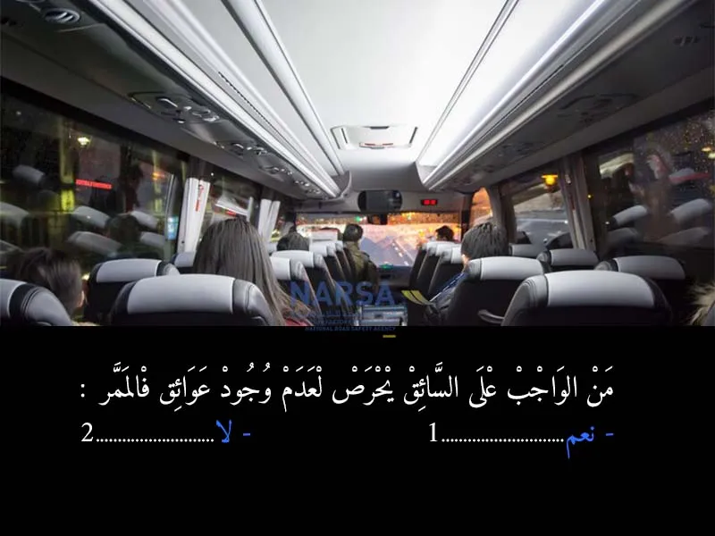
بيّن الجواب
الجواب الصحيح: 1
عوائق في الممر الذي يسير فيه، سواء كان طريقاً أو ممر راجلين أو أي ممر آخر، وذلك لأن:
- وجود عوائق في الممر يعرقل حركة المرور ويسبب خطرًا على سلامة الجميع.
- العوائق قد تؤدي إلى حوادث أو اصطدامات.
- حرص السائق على نظافة الممر وسلامته جزء من مسؤوليته القانونية والأخلاقية على الطريق.
لذلك، نعم، من واجب السائق أن يتأكد دائمًا من عدم وجود عوائق تعترض طريقه
السؤال 6
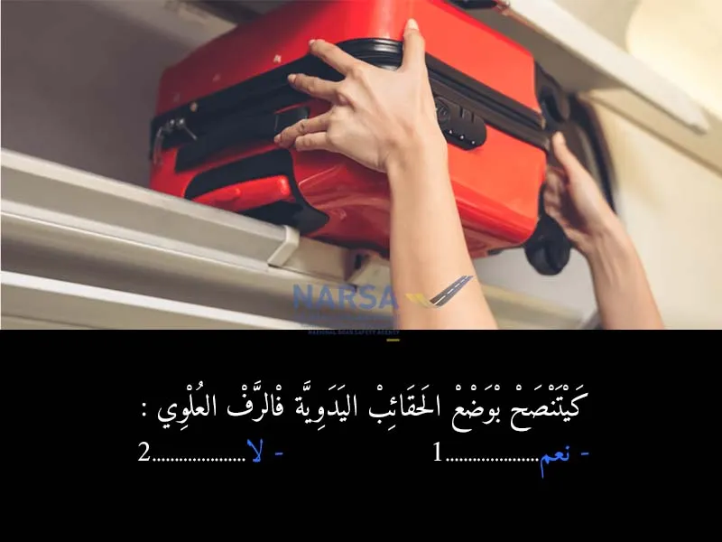
بيّن الجواب
الجواب الصحيح: 1
الرفوف العلوية (أو الخزائن العلوية) في الحافلات والقطارات مصممة خصيصاً لتخزين الحقائب اليدوية والأمتعة الصغيرة. الهدف الرئيسي من وجودها هو توفير مكان آمن ومناسب لهذه الأمتعة. 🧳
- يُنصح بشدة بوضع الحقائب اليدوية في الرفوف العلوية المخصصة لذلك في الحافلات، لضمان سلامة الركاب وتجنب أي حوادث أو عرقلة.
السؤال 7
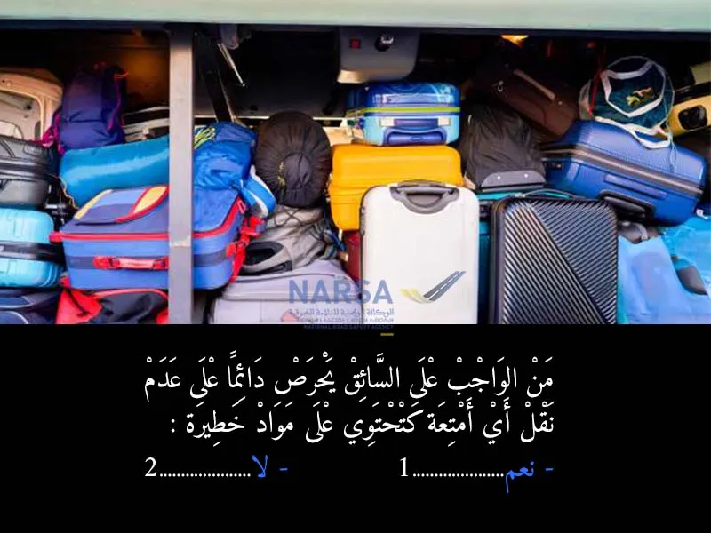
بيّن الجواب
الجواب الصحيح: 1
من واجب السائق الحرص دائمًا على عدم نقل أي أمتعة تحتوي على مواد خطيرة، وذلك للأسباب التالية:
حماية سلامته وسلامة الركاب، لأن المواد الخطيرة قد تسبب حوادث أو تلوث أو حرائق.
الالتزام بالقوانين: قوانين السير تحظر نقل المواد الخطيرة دون التصاريح والتدابير اللازمة.
تجنب المخاطر التي قد تنجم عن تسرب أو انفجار أو تفاعل هذه المواد مع البيئة أو مع المركبة.
لذلك، يجب على السائق التأكد من عدم حمل مثل هذه المواد في مركبته، إلا إذا كان مرخصًا ومهيأًا لذلك بطريقة آمنة وقانونية
السؤال 8
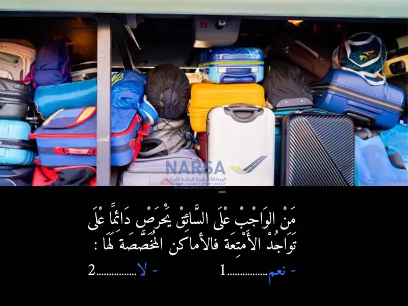
بيّن الجواب
الجواب الصحيح: 1
من واجب السائق الحرص دائمًا على تواجد الأمتعة في الأماكن المخصصة لها، لأن:
🛡 هذا يحافظ على سلامة الركاب والسائق.
🚫 يمنع الأمتعة من التسبب في عرقلة حركة الركاب أو السقوط أثناء السير.
📏 يحافظ على توازن المركبة ويمنع التأثير على طريقة القيادة.
⚠ الأمتعة غير المنظمة قد تسبب حوادث أو إصابات في حالة الفرملة المفاجئة.
لذلك، تنظيم الأمتعة بشكل صحيح داخل الحافلة أمر ضروري للحفاظ على السلامة
السؤال 9
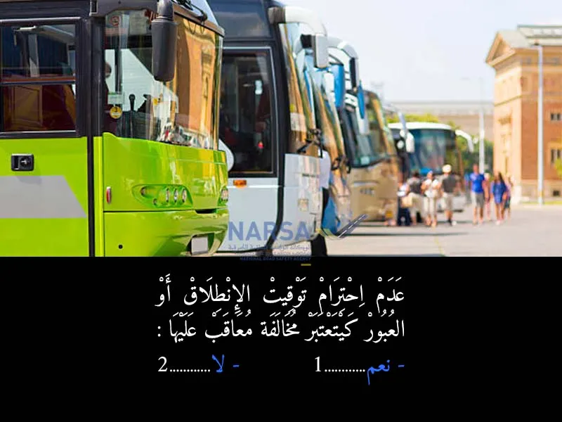
بيّن الجواب
الجواب الصحيح: 1
لجواب 1
عدم احترام توقيت الانطلاق أو المرور ديال الحافلة كيتعتابر مخالفة يعاقب عليها القانون، علاش؟
لأن الحافلات خاصها تلتزم بجدول زمني محدد كيضمن سلامة وتنظيم السير.
أي تأخير أو تجاوز للوقت كيسبب فوضى وتأخير للمسافرين.
كذلك، احترام الوقت مهم فالمحطات باش ما يقعش تداخل بين الحافلات.
📌 إذن، السائق ملزَم قانونياً باحترام التوقيت المحدد وإلا كيعرّض راسو للعقوبة
السؤال 10
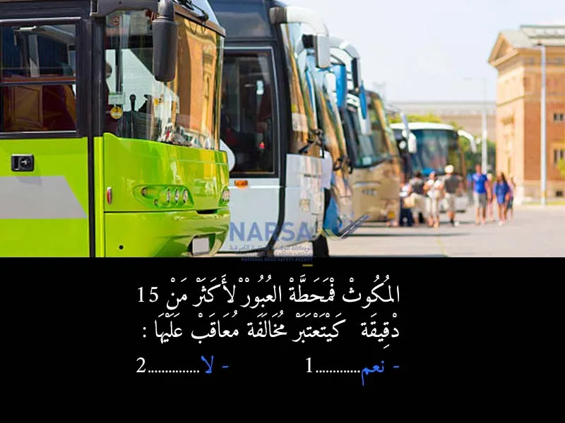
بيّن الجواب
الجواب الصحيح: 1
البقاء في محطة العبور لأكثر من 15 دقيقة دون مبرر يعتبر مخالفة يعاقب عليها القانون، بهدف الحفاظ على انسيابية وتوقيتات حركة الحافلات.
- بشكل عام، يُسمح للحافلات بالتوقف في محطات العبور للمدة اللازمة لإتمام عملية صعود ونزول الركاب بشكل آمن، وربما الانتظار لوقت محدد في حالة وجود جدول زمني (planning) يفرض ذلك.
السؤال 11
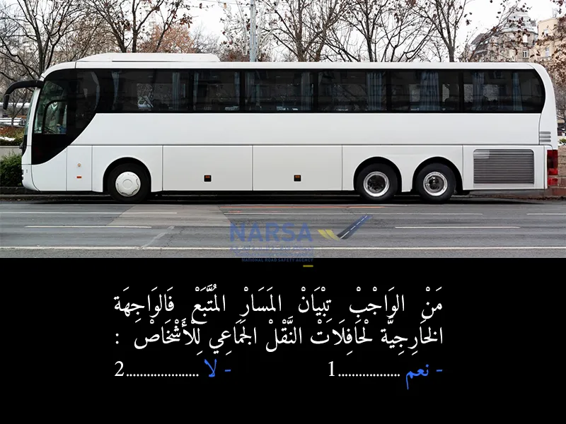
بيّن الجواب
الجواب الصحيح: 1
في أي نظام نقل عمومي للأشخاص (مثل الحافلات الحضرية أو بين المدن)، من الضروري جداً أن يتم تبيان المسار (الخط) الذي تتبعه الحافلة ووجهتها النهائية بوضوح على الواجهة الخارجية للحافلة. 🚌🗺️
أهمية ذلك:
للمسافرين: يتيح للمسافرين معرفة الحافلة التي يجب عليهم ركوبها للوصول إلى وجهتهم، ويجنبهم ركوب الحافلة الخاطئة. هذا يوفر عليهم الوقت والجهد. 👨👩👧👦
لتنظيم حركة السير: يساعد السائقين الآخرين والمشاة وعناصر الأمن في التعرف على مسار الحافلة المتوقعة، مما يساهم في انسيابية حركة المرور. 🚦
المتطلبات القانونية والتنظيمية: تفرض التشريعات المنظمة لقطاع النقل العمومي (بما في ذلك مدونة السير في المغرب) على شركات النقل الالتزام بهذا الشرط كجزء من معايير الخدمة والسلامة. وهذا يشمل عادةً عرض رقم الخط، والوجهة، وأحياناً بعض المحطات الرئيسية. 📄
الموقع: غالباً ما يتم عرض هذه المعلومات في مقدمة الحافلة، وعلى جانبيها، وأحياناً في مؤخرتها، بشكل واضح ومقروء.
السؤال 12
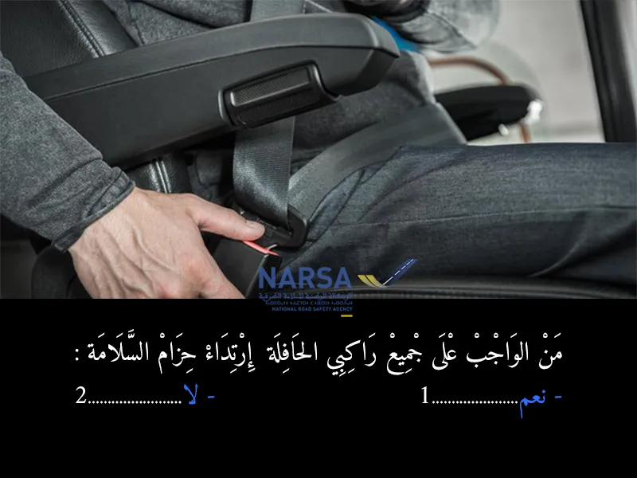
بيّن الجواب
الجواب الصحيح: 1
حسب مدونة السير المغربية، من الواجب على جميع راكبي الحافلة (سواء السائق أو الركاب) ارتداء حزام السلامة إذا كانت المقاعد مجهزة به.
🔹 هذا الإجراء يهدف إلى حماية الأرواح في حالة وقوع حادث أو فرملة مفاجئة.
🔹 الالتزام بحزام السلامة يُقلل من خطورة الإصابات بنسبة كبيرة.
⚠ ملاحظة قانونية:
إذا لم يلتزم الراكب بارتداء حزام السلامة، يُعتبر ذلك مخالفة، ويمكن أن تُفرض غرامة سواء على الراكب أو على السائق في بعض الحالات.
السائق مسؤول عن التأكد من التزام الركاب، خاصة الأطفال أو من يرافقهم
السؤال 13
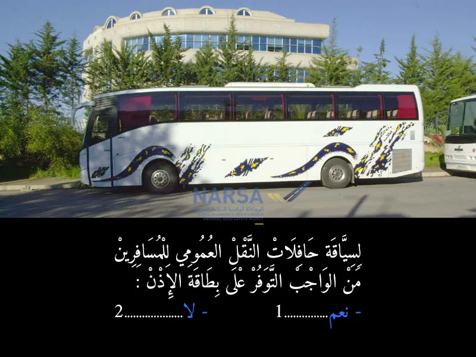
بيّن الجواب
الجواب الصحيح: 2
لسياقة حافلات النقل العمومي للمسافرين في المغرب، من الواجب على السائق التوفر على رخصة السياقة صنف "د" و بطاقة السائق المهني. أما "بطاقة الإذن"، فهي وثيقة ترخيص للمركبة (الحافلة) أو لخط النقل، وليست وثيقة يتوفر عليها السائق شخصياً.
السؤال 14
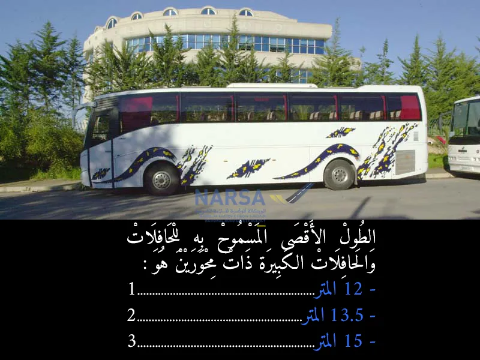
بيّن الجواب
الجواب الصحيح: 1
الطول الأقصى المسموح به للحافلات والحافلات الكبيرة ذات المحورين (غير المفصلية) في المغرب هو 12 متراً.
السؤال 15
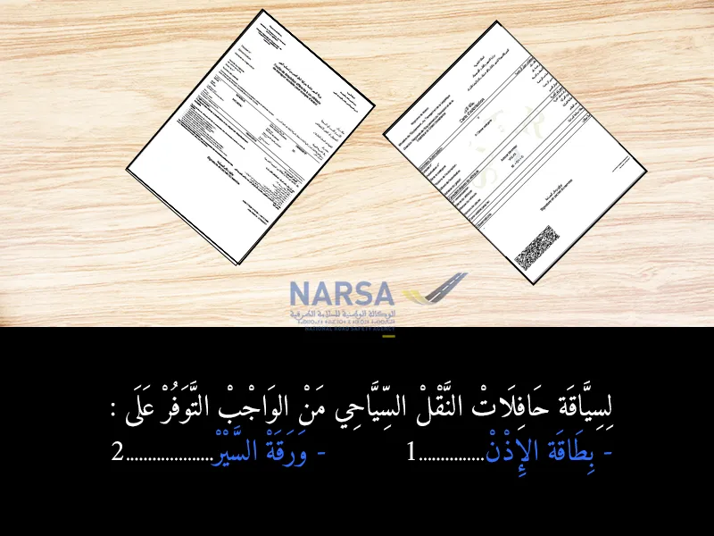
بيّن الجواب
الجواب الصحيح: 1
لسياقة حافلات النقل السياحي في المغرب، من الواجب قانونًا التوفر على "بطاقة الإذن"، وهي وثيقة ضرورية تُسلم من طرف السلطات المختصة.
🔹 هذه البطاقة تُثبت أن الحافلة مرخص لها بمزاولة نشاط النقل السياحي، وتُحدد الشروط والوجهات التي يُسمح لها بالعمل فيها.
🔹 الغرض منها هو تنظيم القطاع السياحي وضمان أن الحافلات المستعملة تحترم المعايير التقنية والسلامة.
❌ ماشي ورقة السير:
"ورقة السير" هي وثيقة أخرى، مرتبطة أساسًا بوسائل النقل العمومي أو المهني، لكنها لا تعوّض بطاقة الإذن الخاصة بالنقل السياحي.
السؤال 16
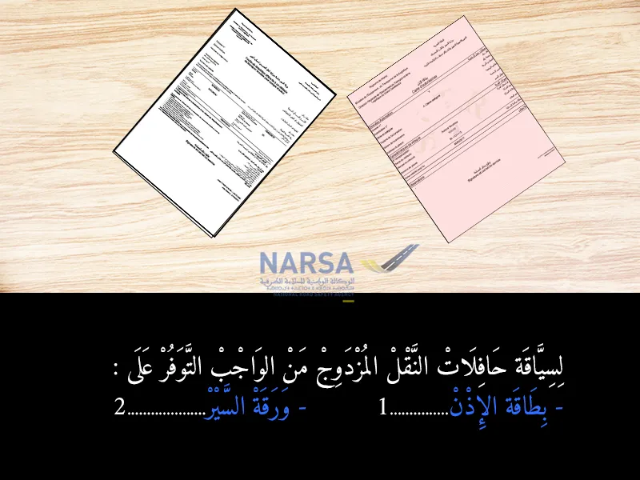
بيّن الجواب
الجواب الصحيح: 1
لسياقة حافلات النقل المزدوج في إطار نشاطها، من الواجب التوفر على بطاقة الإذن (ترخيص النقل لهذه الحافلة أو لهذا الخط/النشاط)، بالإضافة إلى الوثائق الأساسية الأخرى (مثل ورقة السير ورخصة السياقة وبطاقة السائق المهني). السؤال هنا يركز على الوثيقة المحددة لنشاط "النقل المزدوج".
السؤال 17
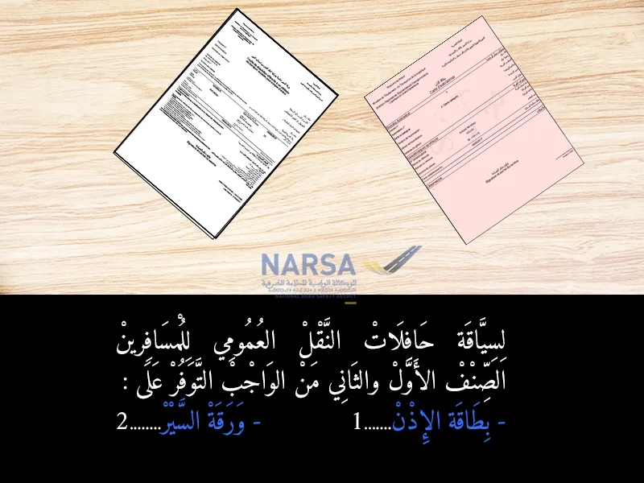
بيّن الجواب
الجواب الصحيح: 1
لسياقة حافلات النقل العمومي للمسافرين (الصنف الأول والثاني)، من الواجب القانوني التوفر على "بطاقة الإذن".
🔹 هذه البطاقة تُسلَّم من طرف السلطات المختصة، وتُعتبر بمثابة ترخيص رسمي يُسمح من خلاله للحافلة بنقل المسافرين داخل أو خارج المدن.
🔹 الهدف منها هو:
ضمان أن الحافلة تحترم معايير السلامة والجودة.
تنظيم القطاع والحد من الفوضى والعشوائية في النقل العمومي
السؤال 18
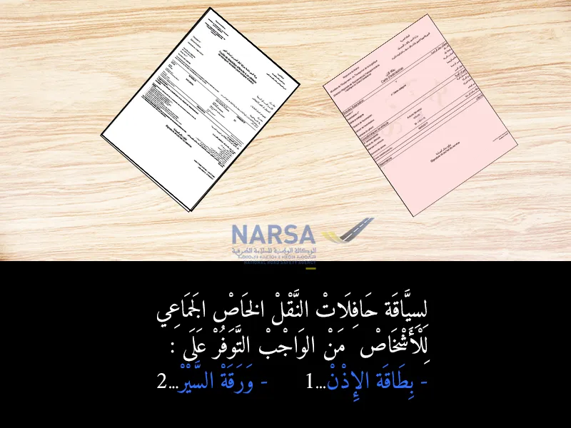
بيّن الجواب
الجواب الصحيح: 2
لسياقة حافلات النقل الخاص الجماعي للأشخاص، مثل الحافلات التي تنقل العمال أو الموظفين أو التلاميذ لمؤسسات معينة (يعني ماشي نقل عمومي)، من الضروري التوفر على "ورقة السير".
✅ ما هي "ورقة السير"؟
هي وثيقة تُمنح من طرف الإدارة، وتُبيّن:
نوع الخدمة التي تقدمها الحافلة (مثلاً: نقل العمال – نقل التلاميذ).
المسارات المحددة.
شروط تشغيل المركبة.
🟢 هذه الورقة تُعتبر بمثابة ترخيص خاص بالسير داخل مجالات معينة، حسب نوع النشاط.
❌ ماشي بطاقة الإذن:
بطاقة الإذن مطلوبة فقط فـ النقل العمومي، أما فـ النقل الخاص الجماعي، فيكفي تكون عندك ورقة السير
السؤال 19
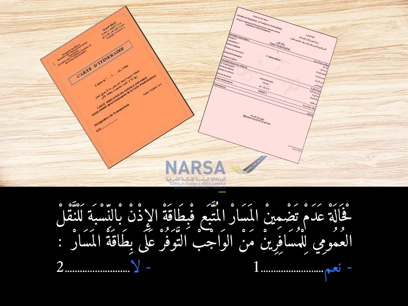
بيّن الجواب
الجواب الصحيح: 1
فـ النقل العمومي للمسافرين، السائق خاصو يتبع مسار معين ومصرح به، وهذا المسار كيكون غالباً مذكور فـ بطاقة الإذن.
لكن فـ حالة ما إذا ماكانش المسار مذكور فبطاقة الإذن، فالواجب على السائق أو صاحب المركبة أنه يتوفر على "بطاقة المسار".
✅ **ما هي "بطاقة المسار"؟
هي وثيقة كتعوّض غياب المسار فبطاقة الإذن**، وكتوضح بالضبط:
الخط أو الطريق اللي غادي تمشي فيه الحافلة.
المحطات أو النقط اللي كتوقف فيها.
توقيت السير.
هذي البطاقة ضرورية باش يكون كلشي قانوني، وكتبين أن المركبة كتقوم بالنقل فـ مسار مُرخص به.
⚠ إذا ماكانش عندك لا بطاقة الإذن فيها المسار ولا بطاقة المسار، كتكون المخالفة قانونية، ويمكن تعرّض نفسك للعقوبات
السؤال 20
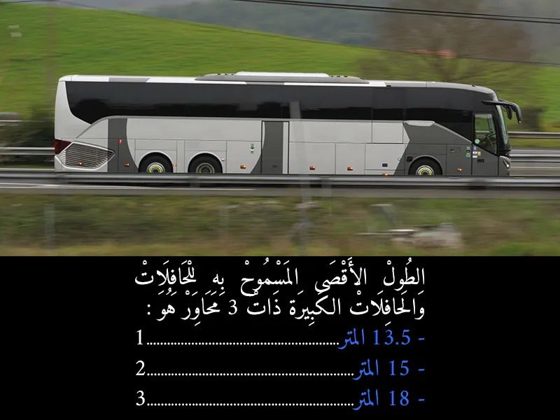
بيّن الجواب
الجواب الصحيح: 2
وفقًا لمدونة السير المغربية، فإن الطول الأقصى المسموح به للحافلات الكبيرة ذات ثلاث محاور هو 15 مترًا.
📏 توضيح مبسط:
حافلة ذات محورين: الحد الأقصى للطول هو 13.5 مترًا.
حافلة ذات ثلاث محاور: الحد الأقصى للطول هو 15 مترًا.
حافلة متمفصلة (مع مقطورة): الحد الأقصى للطول هو 18 مترًا.
هذا التحديد يُعتمد لضمان سلامة السير وتسهيل حركة المرور، خاصة في الطرق الضيقة والمنعطفات